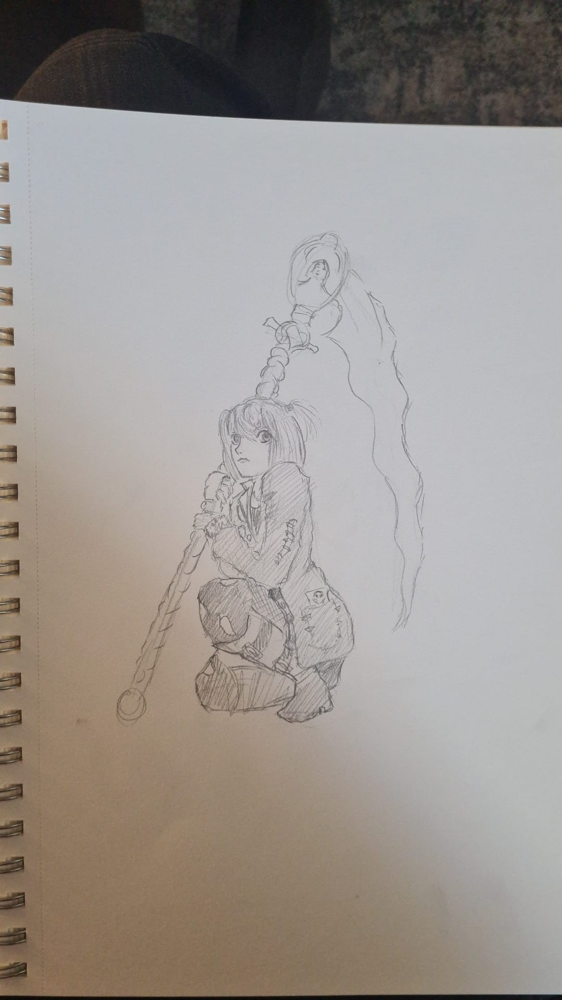
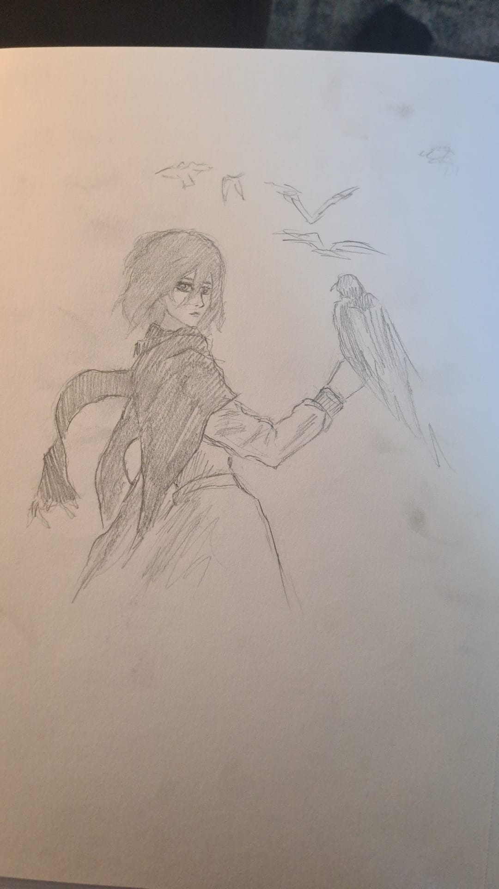
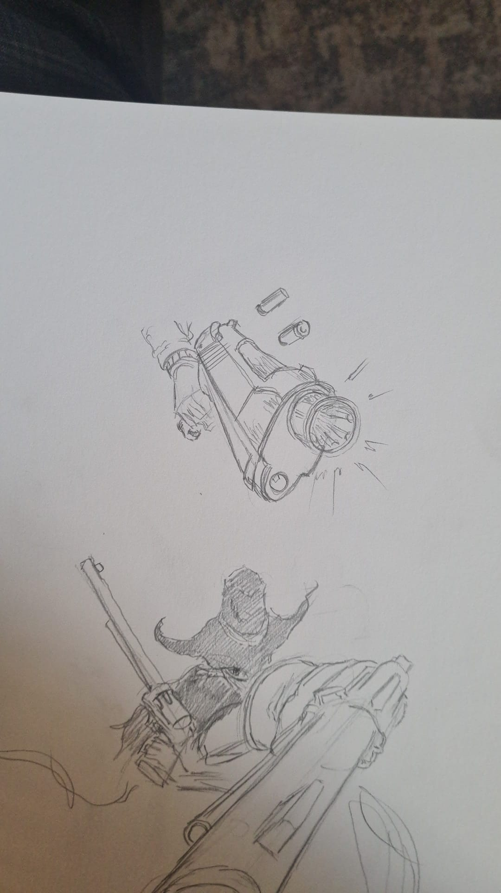
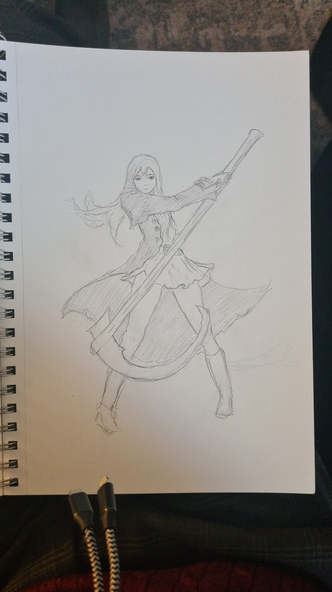

This website has some subtext that goes here under the main title. It's a smaller font and the color is lower contrast
Illustrations by Jonah Tenzyn Komenda

Modern Classic! Misa from the popular anime "Death Note" with a cool scythe!

Depicts Mikasa and a bird existing! A sign of the late J. Komendas Mikasa obsession...

A phenomenal showcase of perspective. Found in J. Komendas notebook in 1879.

Experts say this depicts an OC.
The idea of divine inspiration and an aha moment is largely a fantasy. Anything of value comes from hard work and unwavering dedication.
If you want to be a good artist you need to look at other artists, make a lot of crappy art, and just keep working.
~ Sydney Pink
Call to action! It's time
Sign up for our product by clicking that button right over there!